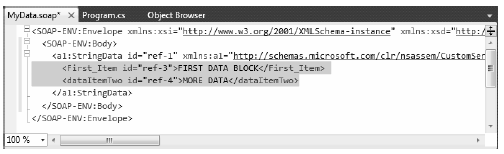

In a majority of cases, the default serialization scheme provided by the .NET platform will be exactly what you require. Simply apply the [Serializable] attribute to your related types and pass the tree of objects to your formatter of choice for processing. In some cases, however, you might wish to become more involved with how a tree is constructed and handled during the serialization process. For example, perhaps you have a business rule that says all field data must be persisted using a particular format, or perhaps you wish to add additional bits of data to the stream that do not map directly to fields in the object being persisted (e.g., timestamps and unique identifiers).
When you wish to become more involved with the process of object serialization, the System.Runtime.Serialization namespace provides several types that allow you to do so. Table 20-13 describes some of the core types you should be aware of.
Table 20-13. System.Runtime.Serialization Namespace Core Types
| Type | Meaning in Life |
|---|---|
| ISerializable | You can implement this interface on a [Serializable] type to control its serialization and deserialization. |
| ObjectIDGenerator | This type generates IDs for members in an object graph. |
| [OnDeserialized] | This attribute allows you to specify a method that will be called immediately after the object has been deserialized. |
| [OnDeserializing] | This attribute allows you to specify a method that will be called before the deserialization process. |
| [OnSerialized] | This attribute allows you to specify a method that will be called immediately after the object has been serialized. |
| [OnSerializing] | This attribute allows you to specify a method that will be called before the serialization process. |
| [OptionalField] | This attribute allows you to define a field on a type that can be missing from the specified stream. |
| [SerializationInfo] | In essence, this class is a property bag that maintains name/value pairs representing the state of an object during the serialization process. |
Before you examine various ways that you can customize the serialization process, you will find it helpful to take a deeper look at what takes place behind the scenes. When the BinaryFormatter serializes an object graph, it is in charge of transmitting the following information into the specified stream:
During the deserialization process, the BinaryFormatter uses this same information to build an identical copy of the object, using the information extracted from the underlying stream. SoapFormatter uses a quite similar process.
Note Recall that the XmlSerializer does not persist a type’s fully qualified name or the name of the defining assembly; this behavior helps keep the state of the object as mobile as possible. This type is concerned only with persisting exposed public data.
Beyond moving the required data into and out of a stream, formatters also analyze the members in the object graph for the following pieces of infrastructure:
In addition to determining whether the type supports ISerializable, formatters are also responsible for discovering whether the types in question support members that have been adorned with the [OnSerializing], [OnSerialized], [OnDeserializing], or [OnDeserialized] attributes. You’ll examine the role of these attributes in mometarily, but first you need to look at the role of ISerializable.
Objects that are marked [Serializable] have the option of implementing the ISerializable interface. Doing so lets you get “involved” with the serialization process and perform any pre- or post-data formatting.
Note Since the release of .NET 2.0, the preferred way to customize the serialization process is to use the serialization attributes (described next). However, knowledge of ISerializable is important for the purpose of maintaining existing systems.
The ISerializable interface is quite simple, given that it defines only a single method, GetObjectData():
// When you wish to tweak the serialization process, // implement ISerializable. public interface ISerializable { void GetObjectData(SerializationInfo info, StreamingContext context); }
The GetObjectData() method is called automatically by a given formatter during the serialization process. The implementation of this method populates the incoming SerializationInfo parameter with a series of name/value pairs that (typically) map to the field data of the object being persisted. SerializationInfo defines numerous variations on the overloaded AddValue() method, as well as a small set of properties that allow the type to get and set the type’s name, defining assembly, and member count. Here is a partial snapshot:
public sealed class SerializationInfo { public SerializationInfo(Type type, IFormatterConverter converter); public string AssemblyName { get; set; } public string FullTypeName { get; set; } public int MemberCount { get; } public void AddValue(string name, short value); public void AddValue(string name, ushort value); public void AddValue(string name, int value); ... }
Types that implement the ISerializable interface must also define a special constructor that takes the following signature:
// You must supply a custom constructor with this signature // to allow the runtime engine to set the state of your object. [Serializable] class SomeClass : ISerializable { protected SomeClass (SerializationInfo si, StreamingContext ctx) {...} ... }
Notice that the visibility of this constructor is set as protected. This is permissible because the formatter will have access to this member, regardless of its visibility. These special constructors tend to be marked as protected (or private for that matter) to ensure that the casual object user can never create an object in this manner. The first parameter of this constructor is an instance of the SerializationInfo type (which you’ve seen previously).
The second parameter of this special constructor is a StreamingContext type, which contains information regarding the source of the bits. The most informative member of StreamingContext is the State property, which represents a value from the StreamingContextStates enumeration. The values of this enumeration represent the basic composition of the current stream.
Unless you intend to implement some low-level custom remoting services, you will seldom need to deal with this enumeration directly. Nevertheless, here are the possible names of the StreamingContextStates enum (consult the .NET Framework 4.0 SDK documentation for full details):
public enum StreamingContextStates { CrossProcess, CrossMachine, File, Persistence, Remoting, Other, Clone, CrossAppDomain, All }
Now let’s look at how to customize the serialization process using ISerializable. Assume you have a new Console Application project (named CustomSerialization) that defines a class type containing two points of string data. Also assume that you must ensure that the string objects are serialized to the stream all uppercase and deserialized from the stream in lowercase. To account for such rules, you could implement ISerializable like this (be sure to import the System.Runtime.Serialization namespace):
[Serializable] class StringData : ISerializable { private string dataItemOne = "First data block"; private string dataItemTwo= "More data"; public StringData(){} protected StringData(SerializationInfo si, StreamingContext ctx) { // Rehydrate member variables from stream. dataItemOne = si.GetString("First_Item").ToLower(); dataItemTwo = si.GetString("dataItemTwo").ToLower(); } void ISerializable.GetObjectData(SerializationInfo info, StreamingContext ctx) { // Fill up the SerializationInfo object with the formatted data. info.AddValue("First_Item", dataItemOne.ToUpper()); info.AddValue("dataItemTwo", dataItemTwo.ToUpper()); } }
Notice that when you fill the SerializationInfo type with the GetObjectData() method, you are not required to name the data points identically to the type’s internal member variables. This can obviously be helpful if you need to further decouple the type’s data from the persisted format. Be aware, however, that you will need to obtain the values from the special, protected constructor using the same names assigned within GetObjectData().
To test your customization, assume that you want to persist an instance of MyStringData using a SoapFormatter (so update your assembly references and imports accordingly):
static void Main(string[] args) { Console.WriteLine("***** Fun with Custom Serialization *****"); // Recall that this type implements ISerializable. StringData myData = new StringData(); // Save to a local file in SOAP format. SoapFormatter soapFormat = new SoapFormatter(); using(Stream fStream = new FileStream("MyData.soap", FileMode.Create, FileAccess.Write, FileShare.None)) { soapFormat.Serialize(fStream, myData); } Console.ReadLine(); }
When you view the resulting *.soap file, you will see that the string fields have been persisted in uppercase (see Figure 20-7).
Figure 20-7 Customizing your serialization with ISerializable
Although implementing the ISerializable interface is one way to customize the serialization process, the preferred way to customize the serialization process since the release of .NET 2.0 is to define methods that are attributed with any of the new serialization-centric attributes: [OnSerializing], [OnSerialized], [OnDeserializing], or [OnDeserialized]. Using these attributes is less cumbersome than implementing ISerializable because you do not need to interact manually with an incoming SerializationInfo parameter. Instead, you can modify your state data directly, while the formatter operates on the type.
Note You can find these serialization attributes defined in the System.Runtime.Serialization namespace.
When you define method decorated with these attributes, you must define the methods so they receive a StreamingContext parameter and return nothing (otherwise, you will receive a runtime exception). Note that you are not required to account for each of the serialization-centric attributes, and you can simply contend with the stages of serialization you want to intercept. The following snippet illustrates this. Here, a new [Serializable] type has the same requirements as StringData, but this time you account for using the [OnSerializing] and [OnDeserialized] attributes:
[Serializable] class MoreData { private string dataItemOne = "First data block"; private string dataItemTwo= "More data"; [OnSerializing] private void OnSerializing(StreamingContext context) { // Called during the serialization process. dataItemOne = dataItemOne.ToUpper(); dataItemTwo = dataItemTwo.ToUpper(); } [OnDeserialized] private void OnDeserialized(StreamingContext context) { // Called once the deserialization process is complete. dataItemOne = dataItemOne.ToLower(); dataItemTwo = dataItemTwo.ToLower(); } }
If you were to serialize this new type, you would again find that the data has been persisted as uppercase and deserialized as lowercase.
Source Code You can find the CustomSerialization project under the Chapter 20 subdirectory.
With this example behind you, your exploration of the core details of object serialization services, including various ways to customize the process, is complete. As you have seen, the serialization and deserialization process makes it easy to persist large amounts of data, and it can be less labor-intensive than working with the various reader/writer classes of the System.IO namespace.